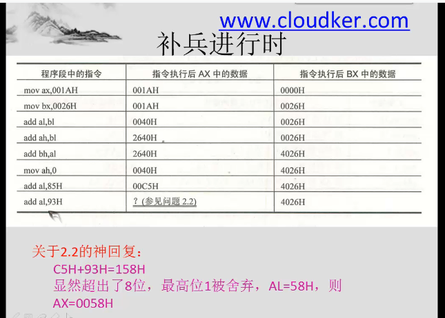
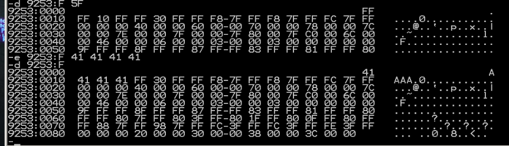
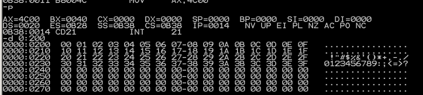
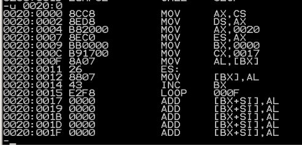

汇编语言学习
内容主要来自于王爽的《汇编语言》第四版。
8086汇编语言学习
视频【8086汇编语言精讲】,是B站的一个教学
配套王爽的《汇编语言》第四版。
B站编程讲解【汇编语言从0开始 重制版 自学必备(配套王爽汇编语言第三版或第四版)】
视频
从机器语言到汇编语言
机器语言，过于繁琐和难以编写。
汇编是什么？
实际上就是机器语言的助记符，给机器码起不同的有意义的名字
汇编语言的组成
- 汇编指令（核心）：机器码的助记符，有对应的机器码
- 伪指令：没有对应的机器码，计算机并不执行，由编译器执行
- 其他符号，由编译器识别，没有对应的机器码
CPU、寄存器与内存
CPU负责运算和指令执行
内存帮助CPU读取存储数据，CPU通过寻址来访问内存，进行数据读写
为了效率，寄存器充当暂存
内存之中存什么
指令和数据都有

存储单元
存储器被划分为若干个存储单元，每个存1Byte
CPU对存储器的读写
存储单元被按顺序编号，编号就是地址
CPU要从内存中读取数据，就需要地址
因此需要三种信息：
- 地址信息
- 控制信息
- 数据信息
小结
汇编指令和机器指令一一对应，每一种CPU都有自己的汇编指令集
扩展知识
大部分为计组的内容。
书

总线
需要知道地址总线、数据总线、控制总线，其宽度对应的内容。
检测点1.1
- $1KB=1024*8 bit=2^{13} bit$, 宽度为13
- 1024，0-1023
- 8192，1024
- $2^{30},2^{20},2^{10}$
- 64,1,16,4
- 1,1,2,4
- 512,256
- 二进制
其他
后面还有一些OS的知识，学过的应该不需要再看了
内容
寄存器
8086由十四个寄存器
通用寄存器
AX BX CX DX
用于存放一般性数据
都是16位的，但又分为高八位和第八位
比如AX分为AH和AL
 以下的区分只要是为了向下兼容
以下的区分只要是为了向下兼容

指令
 这里需要记住位的概念
这里需要记住位的概念
 比如上面这个例子，是怎么计算的
比如上面这个例子，是怎么计算的
然后还需要知道，AL和AH之间也不互相影响 
操作对象一致性
 这里对于初学者需要特别注意
这里对于初学者需要特别注意
监测点2.1
| 题 | 答案 |
|---|---|
| mov ax,62627 | AX=F4A3H |
| mov ah,31H | AX=31A3H |
| mov al,23H | AX=3123H |
| add ax,ax | AX=6246H |
| mov bx,826CH | BX=826CH |
| mov cx,ax | CX=6246H |
| mov ax,bx | AX=826CH |
| add ax,bx | AX=04D8H |
| mov al,bh | AX=0482H |
| mov ah,bl | AX=6C82H |
| add ah,ah | AX=D882H |
| add al,6 | AX=D888H |
| add al,al | AX=D810H |
| mov ax,cx | AX=6246H |
| 2. |
mov ax,2H
add ax,ax
add ax,ax
add ax,ax
物理地址
唯一的地址是物理地址

段地址、偏移地址
都是16位，最后合成20位

段地址*16+偏移地址=物理地址
段的理解
并没有真正的段
同时，一个段最大是64KB
监测点2.2
- 10H到1000H
- 1001H 2000H
- 小于1001H或者大于2000H即可
段寄存器
CS DS SS ES
CS IP
CS是段寄存器
8086有四个段寄存器：CS DS SS ES
CS是代码段寄存器，IP为指令指针寄存器（偏移地址），组合起来是CPU要执行的指令的地址
CS:IP指向的内容当作当前指令执行
工作流程
- 从 CS:IP 指向的内存单元读取指令，读取的指令进入指令缓冲器:
- IP=IP+所读取指令的长度，从而指向下一条指令
- 执行指令。转到步骤(1)，重复这个过程。
改变值
无法使用MOV直接操作，但是可以使用JMP间接操作
JMP 段地址：偏移地址
比如jmp 2AE3:3;CS=2AE3H,IP=0003H
若想仅修改 P 的内容，可用形如“jmp 某一合法寄存器”的指令完成
监测点2.3
四次，三条指令就三次，JMP一次，四次 IP=0000H
字与字节
QWORD DWORD WORD BYTE bit
内存单元，字单元
低地址存低字节，高地址存高字节
这就是小段存储
DS:[ADDR]
mov al,[0] 其中[0]的意思就是编译地址是0处的内容。
一般形式是：寄存器:[addr]
如果没有寄存器，默认 ds:[addr]
8086CPU一次可以传送16位数据


事实上，只有内存与内存之间不能直接操作。
监测点3.1
(1)
AX=2662H
BX=E626H
AX=E626H
AX=2662H
BX=D6E6H
AX=FD48H
AX=2C14H
AX=0000H
AX=00E6H
BX=0000H
BX=0026H
AX=000CH
(2)
CS=2000H,IP=0,DS=1000H
AX=0,BX=0
mov ax,6622H
CS=2000H IP=3 DS=1000H AX=6622H BX=0000H
jmp 0ff0:0100
CS=0ff0H IP=0100 DS=1000H AX=6622H BX=0000H
mov ax,2000H
CS=0ff0H IP=0103 DS=1000H AX=2000H BX=0000H
mov ds,ax
CS=0ff0H IP=0105 DS=2000H AX=2000H BX=0000H
mov ax,[0008]
CS=0ff0H IP=0108 DS=2000H AX=C389H BX=0000H
mov ax,[0002]
CS=0ff0H IP=010B DS=2000H AX=EA66H BX=0000H
(3)
数据和程序在计算机中都是以二进制的形式存放的，
在区别程序和数据时，关键是看段地址，如果段地址是ds
段，说明该内存存放的是数据，如果段地址是cs段，说明该内存
存放的是指令。
栈
PUSH入栈
POP出栈
都是以字为单位的
比如push ax就是把ax的内容放到栈中
SS:SP
SS:SP存放了栈顶的地址
push ax
- sp=sp-2
- ax中的内容放入栈
操作内容
push pop可以操作 寄存器、段寄存器、内存单元
Stack Overflow
危险的情况，千万小心。
伪指令
伪指令没有对应的机器码，是编译器来执行伪指令
segment ends
segment和ends组合使用，用于定义一个段
格式：
段名:segment
·
·
·
段名:ends
end
end是一个汇编程序的结束标记
如果碰到了end，就结束源程序的编译
assume
含义是“假设”，假设某一段寄存器和程序中的某一个segment ends定义的段相关联。
loop
循环指令，要有标号
CX是存放判定条件的
inc、dec：自增、自减
[bx]表示bx之中存储的内容当作偏移地址
DX 累加器
在汇编源程序之中，数据不能以字母开头。
Debug的g命令,可以直接执行之前的所有汇编命令
p命令，可以直接执行完循环
MASM和Debug的不同

回到标题
类型不匹配，怎么解决？
把8位的先赋值到16位寄存器之中，然后再操作
一般我们如果需要向内存写入数据，可以使用0:200~0:2ff的256个字节的空间。
段
在assume之中把各个段定义然后分开存储，清晰
所有的空间应该有系统为我们分配
伪指令end
监测点6.1
第一问
assume cs:codesg
codesg segment
dw 0123h,0456h,0789h,0abch,0defh,0fedh,0cbah,0987h;ip为0,2,4,6,8..
start: mov ax,0
mov ds,ax;ds设置为0
mov bx,0
mov cx,8;8次循环
s: mov ax,[bx]
___;填写的地方,应该填写`mov cs:[bx],ax`
add bx,2
loop s
mov ax,4c00h
int 21h
codesg ends
end start
第二问
assume cs:codesg
codesg segment
dw 0123h,0456h,0789h,0abch,0defh,0fedh,0cbah,0987h
dw 0,0,0,0,0,0,0,0,0,0
start: mov ax,___;应该填cs,因为栈空间被放到了程序的开头进行声明
mov ss,ax;设置ss的值
mov sp,___;设置sp的值,应该填24h,因为前面还有8个字,即16字节,栈顶是往高位 数,而且栈里面有10个字节
mov ax,0;
mov ds,ax;ds为0
mov bx,0;bx用做下标
mov cx,8;循环8次
s: push [bx];把0:[bx]入栈
pop cs:___;这里应该赋值给cs:[bx],所以填写[bx]
add bx,2
loop s
mov ax,4c00H
int 21h
codesg ends
end start
与或非
与或非的概念，比较简单
字符串
 这里的db是指一个字符一个byte
这里的db是指一个字符一个byte
大小写转换
ascii码之中，小写=大写+20H
 这里主要就是这个第五位(20H的2，即32)
这里主要就是这个第五位(20H的2，即32)
核心就是，转大写：
and al,11011111B
转小写
or al,00100000B
[bx+idata]
[bx+idata]表示一个内存单元，偏移地址为(bx)+idata
有以下几种写法
mov ax,[200+bx]
mov ax,[bx+200]
mov ax,200[bx]
mov ax,[bx].200
[bx+idata]可以进行类似数组的处理
SI和DI
和bx功能接近的寄存器，但不能分为两个八位的寄存器使用
分别表示源和目的
[bx+si]
[bx+si+idata]可表示以下形式
mov ax,[bx+si+200]
mov ax,[si+bx+200]
mov ax,[200+bx+si]
mov ax,200[bx][si]
mov ax,[bx].200[si]
mov ax,[bx][si].200
不同寻址方式的灵活应用

二重循环
用dx存cx,内层循环结束后，把dx赋值给cx。
如果没有富余的寄存器怎么办？存在内存空间之中即可！
内存需要记忆地址，怎么办？使用栈！
bx si di bp
只有这四个寄存器用于寻址
同时，bi不能与bp相加，si和di相加
bi\bp和si\di可以相加

只要有bp,默认段为ss!
数据位置
立即数、寄存器、短地址和偏移地址
寻址方式
- 直接寻址
- 寄存器间接寻址
- 寄存器相对寻址
- 基址变址寻址
- 相对基址变址寻址

指令到底有多长？
引入了X prt操作符说明， X可以是word byte， 例如
mov word ptr ds:[0],1
inc byte ptr [bx]
add word ptr [bp],2
push 和 pop永远是对word操作
寻址方式的综合应用


从汇编可以感受出来，结构体也就是一段内存空间而已，没什么太深的东西。
我们可以看到，8086CPU 提供的如[bx+si+idata]的寻址方式为结构化数据的处理提供了方便。使得我们可以在编程的时候，从结构化的角度去看待所要处理的数据。从上面可以看到，一个结构化的数据包含了多个数据项，而数据项的类型又不相同，有的是字型数据，有的是字节型数据，有的是数组(字符串)。一般来说，我们可以用[bx+idata+si]的方式来访问结构体中的数据。用 bx 定位整个结构体，用idata 定位结构体中的某一个数据项用 si 定位数组项中的每个元素。为此，汇编语言提供了更为贴切的书写方式，如:[bx].idata、[bx].idata[si] .
Div指令
- 除数有8和16位两种，存在一个寄存器或者内存单元之中
- 被除数，存在AX或者AX和DX之中。DX存高16位，AX存低16位。只有32位/16位和16位/8位。
- 结果，如果除数为8位，AL存商，AH存余数。如果除数为16位，AX存商，DX存余数。
伪指令dd
定义double word
伪指令dup
是一个操作符，用来进行数据的重复
db 3 dup (0)
定义了三个字节，值都是0.相当于
db 0,0,0
使用方法： dd 重复的次数 dup （重复的数据）
转移指令
可以修改IP或CS和IP的，统称为转移指令。
8086CPU 的转移行为有以下几类。
- 只修改P 时，称为段内转移，比如: jmp ax。
- 同时修改 CS 和P 时，称为段间转移，比如: jmp 1000:0
由于转移指令对 IP 的修改范围不同，段内转移又分为: 短转移和近转移
- 短转移 IPP 的修改范围为-128~127.
- 近转移 IP 的修改范围为-32768~32767。
8086CPU 的转移指令分为以下几类
- 无条件转移指令(如: jmmp)
- 条件转移指令
- 循环指令(如: loop)
- 过程
- 中断
offset
取标号的偏移地址
jmp
无条件跳转指令，只修改IP，也可以同时修改CS和IP
jmp必须给出的信息：
- 转移的目的地址
- 转移的距离
jmp short
段内短转移，IP属于-128到127
CPU在执行jmp指令的时候并不需要转移的目的地址
jmp near ptr

jmp far ptr

监测点9.1
- dw 0,0.0
- offset start; cs
- CS=0006,IP=00BE
jcxz
有条件跳转，所有的有条件跳转指令，都是短转移。
监测点9.2
mov ch,0
mov cl,[bx]
jxcz ok
inc bx
loop
之前已经讲过了
监测点9.3
inc cx
自动监测
如果转移的范围超过了边界，编译器会报错。
ch10
ch11
ch12
记录了所有实验的内容
前面的部分实验由于仅仅是调试和学习，因此不记录具体细节。
所有编程作业都给出完整代码。
Debug
一种Dos和windows7以前提供的调试工具，可以看寄存器内容、内存状态和机器码。
功能
用 Debug 的 R 命令查看、改变 CPU 寄存器的内容; 用 Debug 的 D 命令查看内存中的内容: 用 Debug 的 E 命令改写内存中的内容; 用 Debug 的 U 命令将内存中的机器指令翻译成汇编指令: 用 Debug 的 T 命令执行一条机器指令; 用 Debug 的 A 命令以汇编指令的格式在内存中写入一条机器指令
开始实验
我所使用的是吾爱破解XP虚拟机
首先输入r，查看各寄存器状态

基本的查看和改变寄存器状态

然后是使用d命令
d 段地址:偏移地址

可惜我这里什么也没看到
d 段地址:起始偏移地址 结尾偏移地址

e 命令可以改变数据内容 
这里把前三个FF改成41,也就是十进制之下的65（A的ascii码）了
也可以按照提示模式逐步改写
u命令可以查看机器码对应的汇编指令，t命令可以执行
a命令则可以以汇编代码形式写入
问题1
mov ax,4E20
add bx,1416
mov bx,2000
add ax,bx
mov bx,ax
add ax,bx
mov ax,001A
mov bx,0026
add al,bl
add ah,bl
add bh,al
mov ah,0
add al,bl
add al,9c
 结果：
结果：
机器码 汇编指令 运行结果 CS:IP
b8 20 43 mov ax,4E20H ax=4E20 1000:0003
05 16 14 add ax,1416H ax=6236 1000:0007
bb 00 20 mov bx,2000H bx=2000 1000:000A
01 d8 add ax,bx ax=8236 1000:000C
89 c3 mov bx,ax bx=8236 1000:000E
01 d8 add ax,bx ax=046C 1000:0000
b8 1a 00 mov ax,001AH ax=001A 1000:0013
bb 26 00 mov bx,0026H bx=0026 1000:0016
00 d8 add al,bl ax=0040 1000:0018
00 dc add ah,bl ax=2640 1000:001A
00 c7 add bh,al bx=4026 1000:001C
b4 00 mov ah,0 ax=0040 1000:001E
00 d8 add al,bl ax=0066 1000:0020
04 9c add al,9cH ax=0002 1000:0022
问题2
 关键在于知道写在哪，那个JMP需要跳到add ax,ax这一句，然后反复加
关键在于知道写在哪，那个JMP需要跳到add ax,ax这一句，然后反复加
问题3
 找到了，但是改不了，因为ROM是只读存储器
找到了，但是改不了，因为ROM是只读存储器
问题4
输入以后有这些玩意儿
在8086PC机中A0000~BFFFF内存是显存地址空间。向地址A0000~BFFFF的内存单元中写数据，就是向显存中写入数据，这些数据会被显示卡输出到显示器上。
本题之中，在一个字(16位)中，低位字节决定了图案，高位字节决定了颜色
段
在修改段寄存器的指令执行时，下一条命令会紧接着执行
观察栈和PSP
还是比较简单的。
PSP的头两个字节是CD20
lab4
向内存0:200~0:23F依次传递数据0~63
assume cs:code
code segment
mov ax,0020H
mov ds,ax
mov bx,0000H
mov cx,0040H
s: mov [bx],bl
inc bl
loop s
mov ax,4c00H
int 21H
code ends
end
这里，bl是否使用用无所谓，因为是小段存储。
向内存0:200~0:23F依次传递数据0~63，只允许使用九条指令，包括mov ax,4c00h和int 21h
代码与上一题相同
最重要的就是复用寄存器。
 最后结果，可见实验成功。
下面的程序的功能是将“mov ax,4c00h”之前的指令复制到内存0~0:200处，补全程序。上机调试，跟踪运行结果。
assume cs:code
code segment
mov ax,cs
mov ds,ax
mov ax,0020h
mov es,ax
mov bx,0
mov cx,23
s:
mov al,[bx]
mov es:[bx],al
inc bx
loop s
mov ax,4c00h
int 21h
code ends
end
提示： (1)复制的是什么？从哪里到哪里？ 答：复制的是程序的指令，从“mov ax,cs”开始到“loop s”。 (2)复制的什么？有多少个字节？你如何知道要复制的字节的数量 复制的是程序的指令，先运行程序，根据CX寄存器的值知道程序的长度(字节)。然后在减去从“mov ax,4c00h“指令开始的程序长度。
 本题的难度在于不知道机器码有长，可以随便填一个数先进去看然后再改
本题的难度在于不知道机器码有长，可以随便填一个数先进去看然后再改
可以发现复制成功 
实验五
第一问
assume cs:code,ds:data,ss:stack
data segment
dw 0123h,0456h,0789h,0abch,0defh,0fedh,0cbah,0987h
data ends
stack segment
dw 0,0,0,0,0,0,0,0
stack ends
code segment
start: mov ax,stack
mov ss,ax
mov sp,16
mov ax,data
mov ds,ax
push ds:[0]
push ds:[2]
pop ds:[2]
pop ds:[0]
mov ax,4c00h
int 21h
code ends
end start
- data没有变化
- CS=0B3B,SS=0B3A ,DS=0B39
- 程序加载后，code段地址设为X，则data段地址为X-2,stack段的段地址为X-1.
第二问
assume cs:code,ds:data,ss:stack
data segment
dw 0123h,0456h
data ends
stack segment
dw 0,0
stack ends
code segment
start: mov ax,stack
mov ss,ax
mov sp,16
mov ax,data
mov ds,ax
push ds:[0]
push ds:[2]
pop ds:[2]
pop ds:[0]
mov ax,4c00h
int 21h
code ends
end start
本题的重点在于：数据段和栈段在程序加载后实际占据的空间都是以16个字节为单位的。程序中只给出了前两个字数据，其余空间都用0填充。
- data不变
- CS=0B3B,SS=0B3A ,DS=0B39
- 程序加载后，code段地址设为X，则data段地址为X-2,stack段的段地址为X-1.
- 实际占有的空间为：$$(N+15)/16*16$$
第三问
assume cs:code,ds:data,ss:stack
code segment
start: mov ax,stack
mov ss,ax
mov sp,16
mov ax,data
mov ds,ax
push ds:[0]
push ds:[2]
pop ds:[2]
pop ds:[0]
mov ax,4c00h
int 21h
code ends
data segment
dw 0123h,0456h
data ends
stack segment
dw 0,0
stack ends
end start
- data不变
- CS=0B39,SS=0B3D ,DS=0B3C
- 程序加载后，code段地址设为X，则data段地址为X+3,stack段的段地址为X+4.
第四问
只有三，因为不指定会从第一个段开始。
第五问
这里，不能把c当栈用，下一题可以
assume cs:code
a segment
db 1,2,3,4,5,6,7,8
a ends
b segment
db 1,2,3,4,5,6,7,8
b ends
c segment
db 0,0,0,0,0,0,0,0
c ends
code segment
start:
mov ax,c
mov ss,ax
mov cx,8
mov bx,0
s: mov ax,a
mov es,ax
mov dl,es:[bx]
mov ax,b
mov es,ax
add dl,es:[bx]
mov ss:[bx],dl
inc bx
loop s
mov ax,4c00h
int 21h
code ends
end start
 a的地址是0B39,b的地址是0B3A，c的地址是0B3B。可以看到成功了
a的地址是0B39,b的地址是0B3A，c的地址是0B3B。可以看到成功了
 总感觉写贼鸡儿麻烦呢。。。
总感觉写贼鸡儿麻烦呢。。。
第六问
这个巨简单，就不停往下压栈就行。
assume cs:code
a segment
dw 1,2,3,4,5,6,7,8,9,0ah,0bh,0ch,0dh,0eh,0fh,0ffh
a ends
b segment
dw 0,0,0,0,0,0,0,0
b ends
code segment
start: mov ax,b
mov ss,ax
mov sp,10h ;拿b当栈用
mov ax,a
mov es,ax
mov bx,0
mov cx,8
s: push es:[bx]
add bx,2
loop s
mov ax,4c00h
int 21h
code ends
end start
编程
assume cs:codesg,ss:stacksg,ds:datasg
stacksg segment
dw 0,0,0,0,0,0,0,0
stacksg ends
datasg segment
db '1. display '
db '2. brows '
db '1. replace '
db '1. modify '
datasg ends
codesg segment
start: mov ax,stacksg
mov ss,ax
mov sp,16;define a stack
mov ax,datasg
mov ds,ax
mov bx,0;begin at line 0
mov cx,4
s0: push cx
mov si,0; column begins at 3
mov cx,4
s: mov al,[bx+3+si]
and al,11011111B
mov [bx+3+si],al
inc si
loop s
add bx,16
pop cx
loop s0
mov ax,4c00H
int 21H
codesg ends
end start
看一下原始的内容，数据段在0B38

可以看到成功！